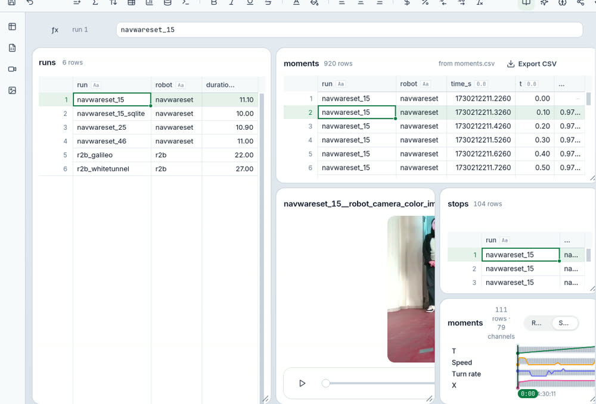

Robot search in omxplorer. Recorded live, on one GPU.
The problem
Robot learning runs on data. The data lives in five places.
EpisodesLeRobot folders
export
BagsROS 2 tools
export
Videoa player
export
Telemetrya notebook
export
Modelsanother script
Every question is a copy, a script and a wait.
omxlabs presents
omxplorer.
The GPU-native workbench for robot learning data.
GPU nativeagent nativemultimodal
What changes
Same questions. Fewer hops.
| Usually | In omxplorer |
|---|
| Find episodes like this one | Embed every clip, stand up a vector search | Tap the clip |
| Open a ROS 2 bag | A bag viewer, then a converter for analysis | Open it: topics become rows, cameras video |
| Video beside its sensors | Two tools, lined up by hand | One cursor |
| Try a model | A Python environment and a script | Paste its name; answers land as a column |
| Let an agent help | Screenshots, or an API someone wrote | Every button is already a tool |
| Hand off a training set | A conversion script | Export LeRobot v3 |
01 · GPU native
Usually, three programs and copies between them.
Decodea video library
copy
Searcha vector database
copy
Screena viewer
01 · GPU native
One process, on one GPU.
one Mojo process · your graphics card
DecodeNVDEC, on the card
Searchon the card
Modelsplugins, in process
Screendrawn by the same program
0.10msa search by example, warm, over 1,851 episodes
537ms24 clips decoded on the GPU, cold, ready as posters
0.6msa chart over a million rows, redrawn
RTX 3090, Linux · omxcode docs/goals/71-report.md (M1, M2) · README (chart)
02 · Agent native
The human gets a button. The agent gets a tool.
panel.mojo · an example written for this slide
from mojoui import App, Event, View, VStack, Text, Button
from robot import Arm # your robot's driver
comptime HOME = 1
comptime GRIP = 2
struct Panel(App):
var arm: Arm
def update(mut self, event: Event):
if event.message == HOME:
self.arm.home()
elif event.message == GRIP:
self.arm.toggle_grip()
def view(self) -> View:
return VStack(Text("SO-100 · " + self.arm.state()),
Button("Home the arm", on_tap=HOME)
.tooltip("Move every joint to its rest pose"),
Button("Grip", on_tap=GRIP),
Text("Every line is Mojo."))
You get a button
SO-100 · ready
Pressing it runs update
One message, one place it's handled.
Your agent gets a tool
Button "Home the arm" → home-the-arm
Move every joint to its rest pose
Button "Grip" → grip
No second API to keep in step. The tool's name is the button's text; its description, the tooltip. That's omxcode, the framework under omxplorer.
03 · Models as plugins
Paste a model's name. Its answers land as a column.
| Model | Kind | Its first answer, after the download |
|---|
| stops (XGBoost file) | tabular | 0.0 s |
| google/vit-base-patch16-224 | picture classifier | 2.7 s |
| hustvl/yolos-tiny | detector | 2.6 s |
| BAAI/bge-small-en-v1.5 | text embedder | 2.9 s |
Four models the app had never seen · omxcode docs/goals/68-report.md (M2) · a pickle, a ../ path and a file holding eval are refused
And all this, today
Built for robot data. Ready for any data.

Robot search
Tap a clip, get every episode like it

ROS 2 bags
MCAP and rosbag2: topics become rows

Video + telemetry
A run's camera and sensors, one cursor
Any table
CSV and Parquet, 100M rows in one sheet
Models as plugins
Answers land as a column
Agent tools
Every button, over MCP
LeRobot export
Learn from labels
Links
SQL
Sentence charts
Plenty more ›
Under the hood
Three parts we built. One language.
omxcore · the engine3.15 sAll 22 TPC-H queries at SF10, on the GPU and CPU. DuckDB on the same machine: 5.08 s.
omxcore benchmarks
Mojo · the compiler1 languageThe GPU kernel, the SIMD loops and the button are the same language, compiled together into one program.
every file in omxcode and omxcore
omxcode · the framework1 codebaseNative on Linux and the web today, Mac builds on CI Macs, Android on the emulator. Same Mojo file.
omxcode docs/components.md
What if · 3D
Point clouds, beside the run that made them.
Lidar and depth drawn on the GPU, on the same cursor as the camera.
Runs in omxcode today 20M points, 1.6 ms a frame
Next in omxplorer · omxcode docs/goals/06-report.md
What if · live robots
Watch the robot while it runs.
The camera and sensors streaming into the sheet, searched as they arrive.
Today a run's video and 16.8M telemetry rows share one cursor
Next in omxplorer · omxcode docs/goals/47-report.md
What if · labelling
Tag a moment. Train the next model.
Label clips where you watch them; the labels flow into training.
Today 20 labels become a rule, right on 19 of 20 rows it never saw
Next in omxplorer · omxcode docs/goals/68-report.md (M1)
Concept
MAMaya picked 3
JOJon is labelling
What if · a team, a cloud
One dataset, many hands.
Picks and labels shared as you make them. Your laptop for a day's runs, a cloud GPU for a year's.
Same engine on any NVIDIA GPU: no rewrite to scale up
Beyond: not built. The picture is a concept.
What if · the Mac
The same code, a native Mac app.
omxcode apps build and run on CI Macs. Robot search on the Mac is next.
Ran in October an earlier omxplorer test build, on a Mac
Next · the current build is being re-linked for the Mac
The shape of it
The foundation is built. Every feature is a room.
A team
Cloud scale
3D
Live robots
Labelling
Mac
Robot search
ROS 2 bags
Video + telemetry
Any table
Models
Agent tools
omxcorethe engine: SQL and search on the GPU
omxcodethe framework: one app, every screen, agent tools
omxquathe look: one design language
Mojo · GPU, SIMD and the app in one compiled language
todaynextbeyond
Who does what · November 2026
Where others are ahead, we say so.
| Foxglove | Rerun | FiftyOne | Roboto | omxplorer |
|---|
| ROS 2 bags (MCAP and .db3) | ✓ | MCAP | MCAP | ✓ | ✓ |
| Opens LeRobot datasets | via bridge | ✓ | ✓ | export | ✓ |
| Search by example | cloud, beta | – | ✓ | cloud | ✓ local GPU |
| Export a LeRobot dataset | – | ✓ | ✓ | ✓ | ✓ |
| Agent tools (MCP) | ✓ | ✓ | ✓ | ✓ | ✓ every button |
| Models in the app | hosted | – | ✓ | cloud | ✓ plugins |
| Decode, search and draw in one GPU process | – | – | – | – | ✓ |
| 3D and point clouds | ✓ | ✓ | ✓ | ? | next |
| Live robots | ✓ | ✓ | – | – | next |
| Teams and cloud scale | ✓ | Hub | Enterprise | ✓ | – |
| Mac | ✓ | ✓ | ✓ | web | next |
From each tool's own docs, read 2026-11-15; "–" means we found nothing documented · omxcode docs/research/robotics-landscape.md
omxplorer · by omxlabs
Bring your robot data.
It runs on the GPU you already have. Send us a dataset you'd like to search, and we'll show you.
Linux x86_64 with an NVIDIA GPU · MIT licensed · a page for every feature: github.com/abhisheksreesaila/omxcode, docs/wiki